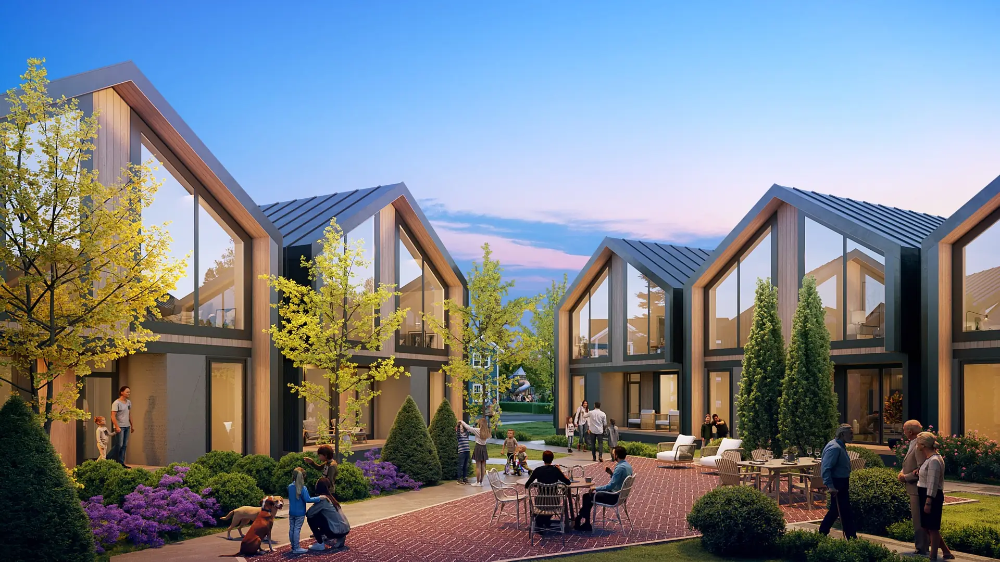
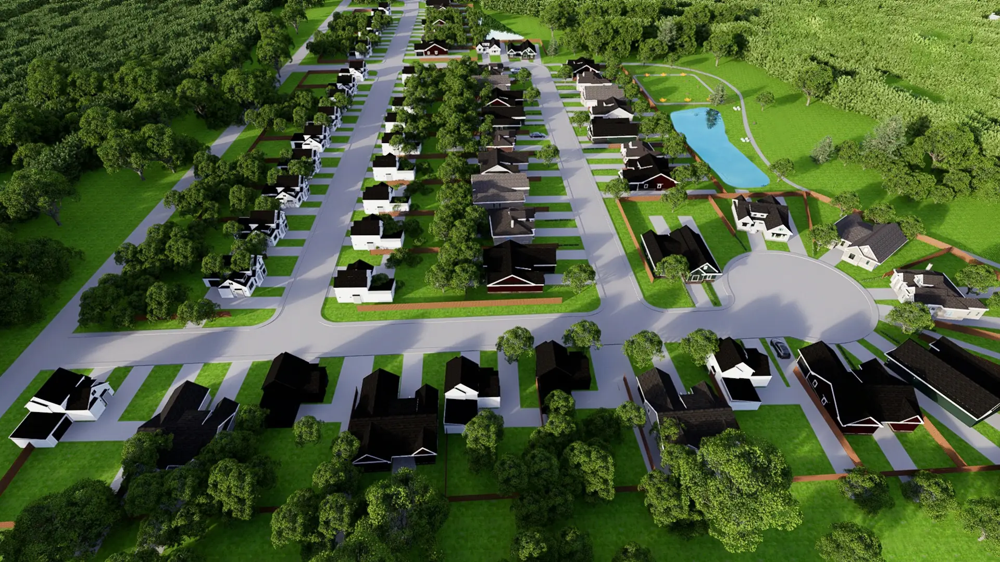
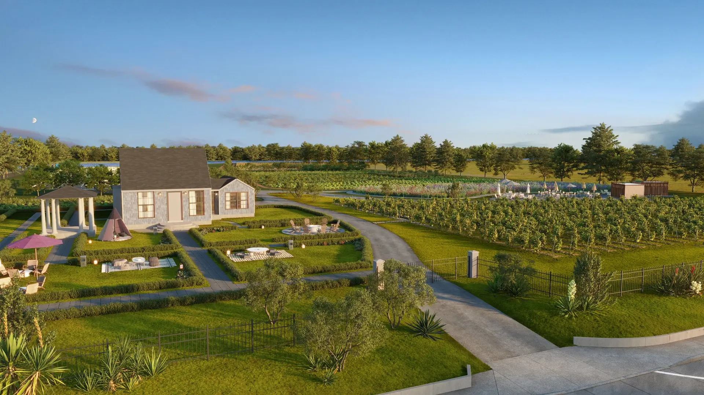

Our approach
From opportunity to execution.
Every stage of development is held in-house — site selection, feasibility, entitlement, capital, construction, and lease-up.
A data-driven approach to underserved markets
We resist the idea of “disadvantageous communities.” Through rigorous market research, demographic analysis, and competitive intelligence, we identify and cultivate opportunities in places that other developers overlook.
From ground-up development to strategic partnerships and competitive financing structures, Onu Ventures turns ambitious visions into viable realities — and viable realities into thriving communities.
Learn about us →
Texas
Sun Belt focus
01
Development
Ground-up development across single-family, multifamily, commercial, and hospitality asset classes.
02
Construction
Hands-on construction management with a focus on cost efficiency, quality, and on-time delivery.
03
Planning
Strategic site selection, rezoning, entitlement, and community engagement from concept to close.
The development lifecycle
01
Site selection
Identifying land and existing assets in markets where fundamentals outrun perception.
02
Market & feasibility
Employment, income, and household data at the ZIP-code level, tested against a hard pro forma before anything is committed.
03
Entitlement & municipal review
Zoning, platting, and public review, managed as a schedule item rather than an obstacle.
04
Planning & community engagement
Concept and final planning developed alongside the residents and stakeholders who will live with the result.
05
Capitalization
Debt, equity, and public incentive structured to make workforce product viable without diluting quality.
06
Construction
Preconstruction, budgeting, contractor selection, procurement, and project management held in-house.
07
Leasing & disposition
Lease-up, operations, and a long hold view, with exit only where it serves the asset.

Impact
Building more than real estate.
Every project starts with the same question: what does this place already have, and what has it been denied? Grocery within walking distance. Retail that hires locally. Housing a working household can actually afford. Gathering space that belongs to the neighborhood rather than to a leasing office.
The firm’s stated aim is to give current and future residents the chance to reclaim pride in their communities without pushing them out.